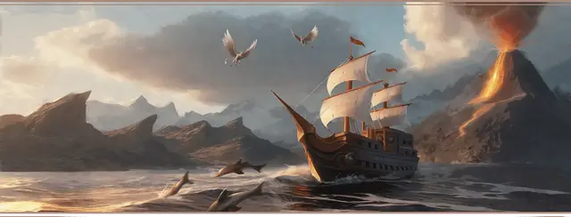

Чондатский флибустьер
Chondathan Freebooter

Характеристики Сила, Ловкость, Мудрость
Черта Одарённый
Навыки Атлетика, Ловкость рук
Инструменты Инструменты ткача
Снаряжение Выберите А или Б: (А) Кинжал, Инструменты ткача, Рюкзак, Металлические шарики, Корзина, Спальник, Ведро, Рационы на 3 дня, Верёвка, Сигнальный свисток, Дорожная одежда и 38 ЗМ; или (Б) 50 ЗМ
Большая часть молодёжи Чондата не уклоняется от четырёхлетней обязательной службы в армии, но вас авторитарные попытки контролировать вашу жизнь приводят в ярость. Вы оставили страну, сменили имя и нанялись на первое же судно, согласившееся вас взять. С тех пор вы ходили по всему Вилхонскому пределу, и хотя вы не отходили от берега больше чем на пару десятков лиг, вы обросли связями с местными, и ваш опыт обширен.